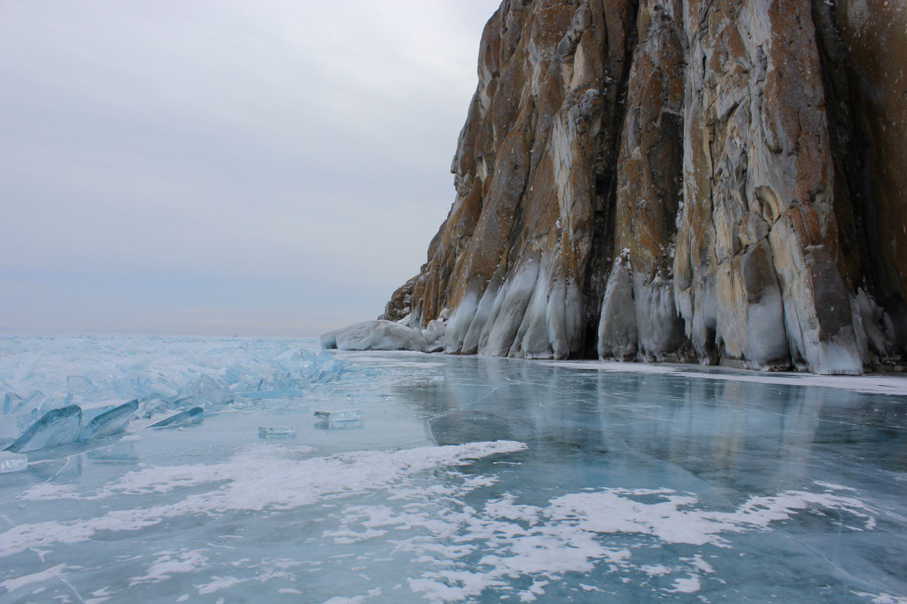

Утёс Саган-Заба
Памятник археологии на берегу Байкала, хранящий символы, оставленные древними племенами, и просто очень красивое место. Саган-Заба хорош в любое время года, но я особенно рекомендую посетить его в феврале или в марте. Бывалые туристы говорят, что в этом месте почти всегда чистый лёд. Расстояние от Иркутска: 225 км (из них 15 км по полевой дороге). Как добраться: на полноприводном автомобиле с высокой посадкой. Из-за того, что часть пути пролегает по полевой дороге, надо ехать компанией не менее, чем на 2-х автомобилях, так вы сможете друг другу помочь, если застрянете в грязи или снегу. Разрешение на посещение: требуется. Оформить можно на официальном сайте Заповедного Прибайкалья в разделе Прибайкальский национальный парк. Что взять с собой: зимой конечно же коньки! А ещё плотный перекус, термос с чаем, треккинговые палки. Поездка: Путь к утёсу не близкий, поэтому выезжать лучше всего рано утром. До п. Тырган дорога хорошая, а дальше грунтовая полевая с множеством развилок, где-то получше, где-то едва заметная. Мы ездили в феврале, на двух машинах, на ходу выбирая тот проезд, который выглядел более накатанным. В некоторых местах возникали сомнения, что по этой дороге можно доехать до утёса, но мы не сдались. От места, где дорога закончилась, примерно 1,5 км надо пройти пешком вниз по тропе. А дальше – восторг! Чистый, совершенно прозрачный, гладкий лёд, торосы и величественный утёс! Надеваем коньки и вперёд – искать древние наскальные рисунки. Возможные опасности: как я рассказал выше – на грунтовой дороге можно застрять, поэтому у вас обязательно с собой должен быть трос. И будьте внимательны, выходя на Байкальский лёд – даже у берега могут быть места с тонким льдом и большие трещины с открытой водой.
